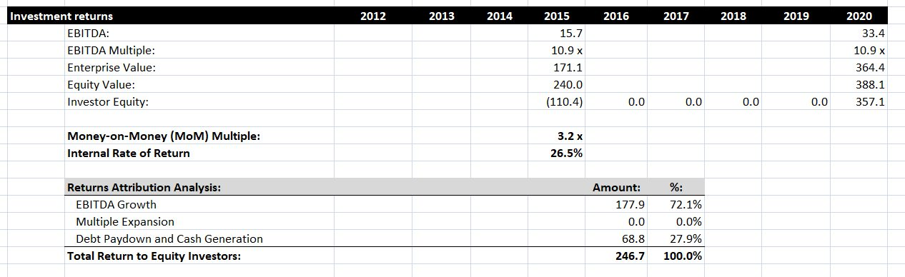
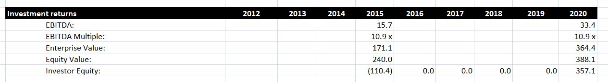
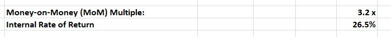
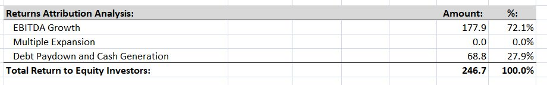

An absolutely critical stage in calculating a Leveraged Buyout model is to measure the returns achieved by the investor. In this post we’ll measure the return achieved by a private equity company, PrivEq, in their leveraged buyout of another company, MarkerCo. We’ll calculate several common metrics for evaluating returns, and we’ll also identify the source of these returns by conducting a returns attribution analysis. We’ll produce the following figures:

Investigating our investment scenario
Let’s set the scene. In out scenario, PrivEq is buying MarkerCo in early 2016. As a result, the most up-to-date historic figures are for 2015. We obtain various figures for 2015 from the financial statements and the transaction assumptions (for more information about creating transaction assumptions for an LBO, read this post).
We are assuming that PrivEq will exit this investment at the end of 2020, and will not take out any equity between the LBO transaction and that time. We’ll need to calculate the same metrics for 2020. We can find the EBITDA for 2020 from our financial statement projections, and we will assume the EBITDA multiple is the same in 2020 as in 2015.

These figures allow us to calculate the enterprise value, equity value and investor equity in 2020. The enterprise value is simply EBITDA multiplied by the EBITDA multiple. To calculate the equity value, we take the enterprise value, add cash, and subtract debt. Cash and debt figures will be in the financial projections.
Finally, we calculate the investor equity by multiplying the equity value by 1 minus the equity rollover amount. In this example, 8% if equity is being rolled over, so the investor equity is 92% of the equity value.
How to calculate our returns
Now we’ve set up the scenario, we can calculate returns. Below, we calculate two common metrics for analyzing an investment transaction like this, the Money-on-Money multiple, and the Internal Rate of Return.

The Money-on-Money multiple is a simple but effective return metric, and is popular in private equity. This is equal to the exit investor equity divided by the entry investor equity. This measures how many times the investors initial equity has grown since the investment.
The Internal Rate of Return is a common metric that can be used in any kind of investment situation. This looks at all the cash flows between 2015 and 2020. In this case, the IRR is 26.5%. Private equity firms like PrivEq generally want an IRR of above 20%, so this investments fits that target.
Conducting a returns attribution analysis
Having identified how large the returns are, we can identify what contributes to these returns by conducting a returns attribution analysis, which splits the return into EBITDA growth, multiple expansion and debt paydown and cash generation. Let’s look at the results of this analysis.

We identify the returns that can be attributed to EBITDA growth by finding the difference between ending EBITDA and starting EBITDA, then multiplying this by the EBITDA multiple. We only want to identify returns that can be attributed to PrivEq, so we also multiply by 92% to account for the equity rollover mentioned earlier.
For multiple expansion, we find the difference between the ending multiple and the starting multiple, then multiple by the ending EBITDA and multiply by 92%. As we saw above, the multiple does not change, so the amount here is zero.
Next, let’s calculate the total return to equity investors, which is the difference between the ending investor equity and the starting investor equity. We can then calculate the returns attributable to debt paydown and cash generation by subtracting the returns attributable to EBITDA growth and multiple expansion from this total.
Based on this returns attribution analysis, it looks like the majority of the returns that PrivEq expect to generate will come from EBITDA growth. This means that PrivEq need to be very confident in their projections of EBITDA over the five years to 2020. If this growth does not happen, there could be a significant reduction in their returns.
Conclusion
We have now seen how to calculate the returns from an LBO model, and how to attribute those returns to various different sources. The level of returns will determine whether or not a transaction is worth completing, so you should be aware of the different ways of calculating returns that we have demonstrated here. Although it is possible to create more complicated LBO models, the evaluation metrics are generally the same, so once you are familiar with these metrics, you will be well able to evaluate and compare a wide variety of corporate financial transactions.